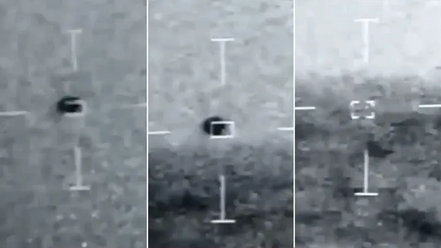

FLAYING SAUCERS (UFO)
Introduction
Literary
Human Plans
On the darker end, theories like Project Blue Beam propose that governments could stage a fake alien invasion using advanced holographic tech to simulate extraterrestrial contact. It’s not even a new idea—Dr. Carol Rosin once claimed that Wernher von Braun warned of a nefarious plan where a “fabricated alien threat” would be the final step in a global takeover. Nothing new, most likely legitimate drone traffic, however
Alien technology or human creation? The mysterious "Buga sphere," captured flying over the Cauca Valley, has divided the world. UNAM confirmed that the object contained optical fibers and highly sophisticated components... espionage, environmental monitoring, or something else? While some scientists, like Garry Nolan, claim it is 99% terrestrial, other researchers claim the sphere has intelligence and collects data from the sky.
Flying Saucers, or, the great "Project Y“ USAF flying saucer prototype from "Life Magazine“ May 31, 1954
Project was led by John C. M. Frost an engineer who worked for de Haviland and Avro Canada and who continued his VTOL work with the Air Force under the Project Y. This aircraft was to fly 1500-2000 mph and have a 1500 mile range.

Why do UFOs/UAPs appear more frequently in developed countries? In the United States, Europe, and Australia. As seen on the distribution map, their appearances have been around for a very long time. Their track record of sightings is very long.
They also frequently appear in other countries with nuclear installations, whether nuclear power plants or nuclear weapons installations, as well as other military installations. UFOs are also frequently seen visiting those locations.
On July 11, Senate Majority Leader Chuck Schumer (D-N.Y.) and Sen. Mike Rounds (R-S.D.) reintroduced the most extraordinary legislation in American history. The Unidentified Anomalous Phenomena Disclosure Act alleges that shadowy elements of the U.S. government have surreptitiously operated “legacy programs” that retrieve and seek to reverse-engineer UFOs of “unknown” or “non-human” origin.
UFO To Water
In July 2019, the USS Omaha recorded a UFO – or UAP (unidentified anomalous phenomena) – that buzzed a Navy fleet off San Diego and disappeared into the ocean without a trac
"The fact that unidentified objects with unexplainable characteristics are entering US water space and the DOD is not raising a giant red flag is a sign that the government is not sharing all it knows about all-domain anomalous phenomena," Gallaudet wrote in his March 2024 report.
Gallaudet called on the U.S. government, academics, philanthropies and the private sector to invest in in-depth research about undersea UAPs. "Sometime in the future, the government may start openly researching UAP to a greater degree than the perfunctory categorization effort underway at AARO," he wrote. "When that occurs, subsequent exploration for UAP on and under the sea will have the benefit of making new ocean science discoveries as well.
The Department of Defense or NASA still haven't been able to explain the UFO seen in the 2019 video that Corbell, an investigative journalist and leading civilian voice about UFOs, released in 2021.

The DoD created the All-domain Anomaly Resolution Office (AARO) tasked with getting answers, but the AARO's reports have concluded there's no verifiable evidence of extraterrestrial life.
The DoD created the All-domain Anomaly Resolution Office (AARO) tasked with getting answers, but the AARO's reports have concluded there's no verifiable evidence of extraterrestrial life.Grusch testified that he had knowledge of secret government-run crashed-UFO-retrieval program to reverse-engineer the technology. He also said the government "absolutely" has UFO tech and "biologics" of "non-human origins" since the 1930s and knows the exact locations where they're being held.
Utsuro-bune (虚舟, utsurobune?, literally "empty boat") is the name given to a boat which, according to Japanese legend, landed at the beginning of 1803 on the coast of Ibaraki Prefecture.
In 1803, a small, lenticular-shaped vessel resembling a flying saucer reportedly drifted out to sea and ran aground on the shores of Hitachi Province, now Ibaraki Prefecture. A very beautiful woman with red hair, wearing strange clothes, and carrying a box emerged from this unusual round boat. This woman spoke an unknown language, and mysterious signs were written inside the boat.This story is mentioned in eleven 19th-century documents under the name "Strange Story of the Empty Boat of Hitachi Country" (常陸国うつろ舟奇談, Hitachi-no-kuni utsuro-bune kidan?), or simply "Utsuro-bune"
In 1992, “multiple witnesses” in California reported that more than 200 disk-shaped objects soundlessly exited Santa Monica Bay waters, hovered for a moment, and then sped away into the sky. Six years later, U.S. Navy Chief Petty Officer Charles Howard wrote an account of an apparent underwater anomaly. “My ship was visiting Guantanamo Bay, Cuba, when I saw three strange, big white lights in the water,” he said in the History Channel show UFO Files. They were “10 or 20 feet on each side with a rounded shape,” according to Howard’s written account.
Media reports
In New Jersey, police have reportedly fired at unidentified flying objects, while Homeland Security suggests law enforcement should have the authority to shoot them down. Sightings over military bases in the UK, Germany, and the United States hint at either low-budget extraterrestrials or a half-baked SkyNet beta test.